Dimanche soir : qui paie l’hospitalisation ?
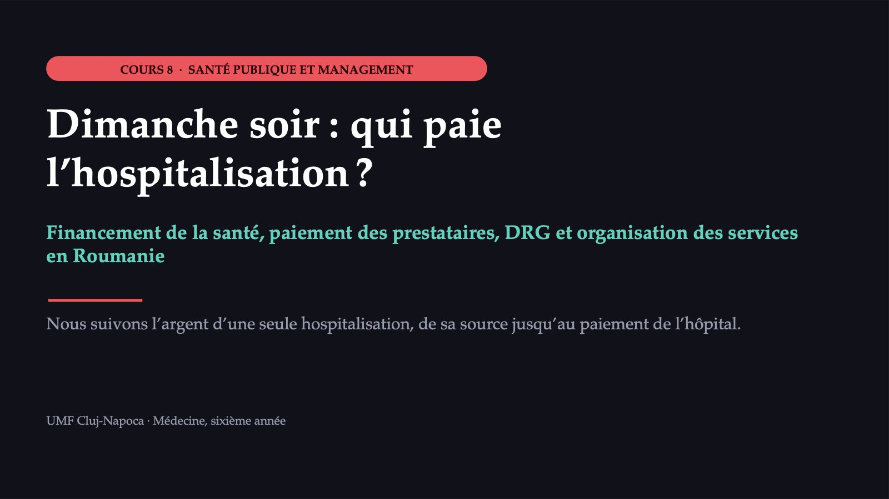
1 / 54Mme M., dimanche soir
![PREMIER ACTE · LA SITUATION Mme M., dimanche soir LA PATIENTE retraitée d’une commune du département B ; diabète de type 2 sous insuline, insuffisance cardiaque chronique DIMANCHE SOIR fièvre et toux depuis trois jours ; elle respire mal ; le cabinet du médecin de famille est fermé jusqu’à lundi LE PARCOURS 112, l’ambulance, les urgences de l’Hôpital départemental A ; pneumonie ; hospitalisée en médecine interne Sortie après huit jours. Avec quel argent son hospitalisation est-elle payée ? Cas construit pour le cours ; les détails sont plausibles, non réels. Cas construit ; valeurs hypothétiques.](diapozitive/C08/002.jpg) 2 / 54
2 / 54Avec quel argent l’hospitalisation de Mme M. est-elle payée, pour l’essentiel ?
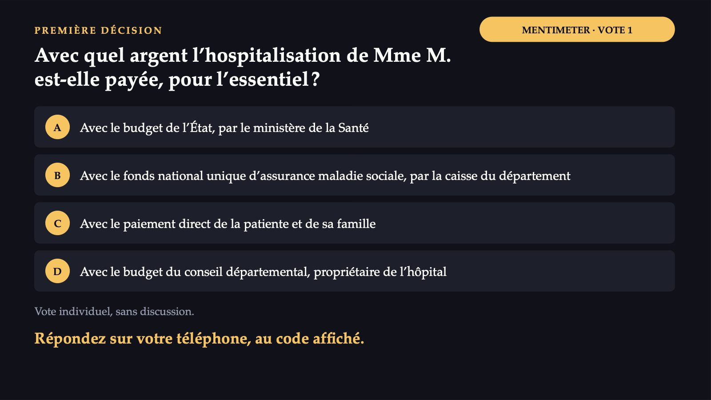
3 / 54Convainquez votre voisin
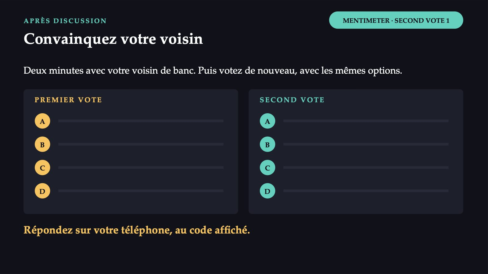
4 / 54Où un système trouve l’argent de la santé
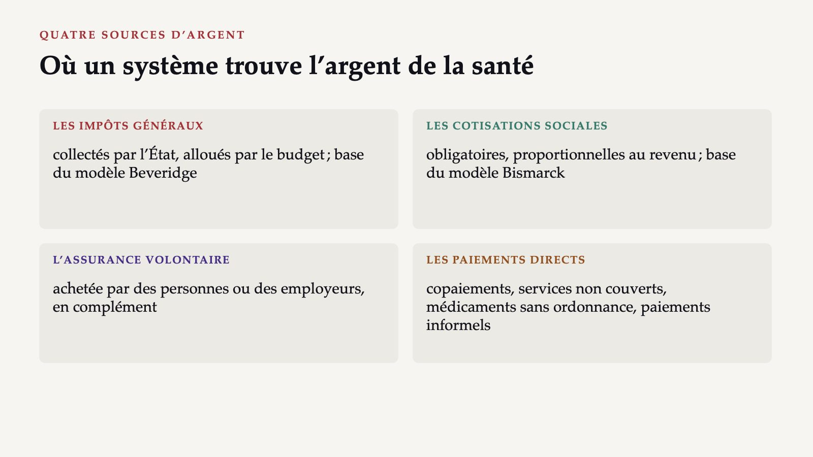
5 / 54L’argent réuni avant la maladie, auprès de beaucoup
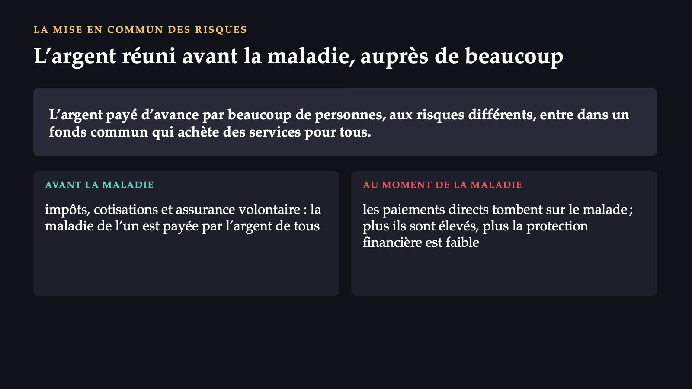
6 / 54Qui paie la santé, par régimes de financement
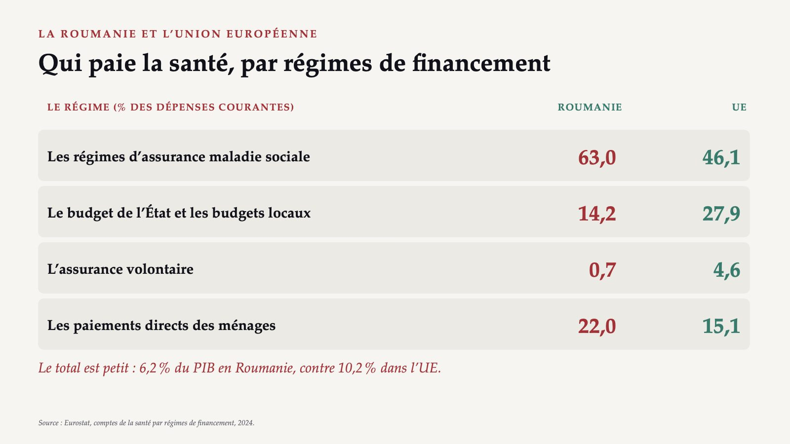
7 / 5410 %
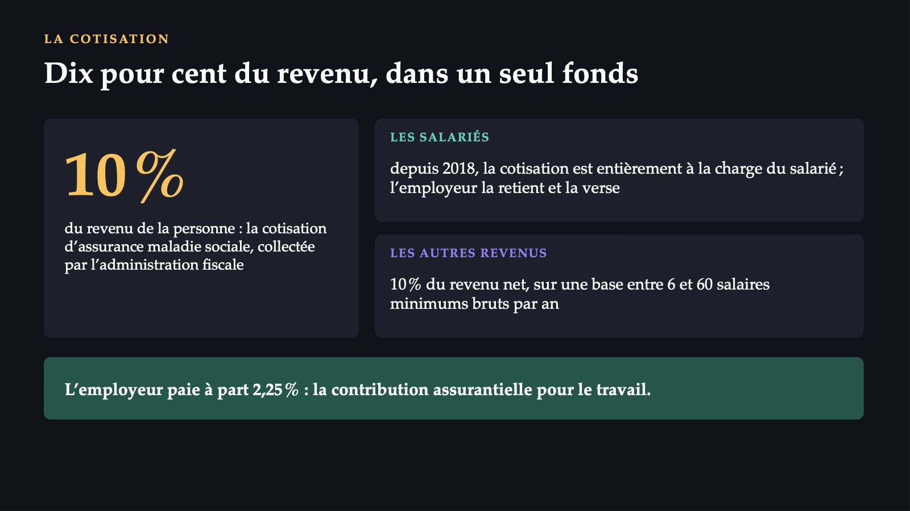
8 / 54Un seul fonds pour tout le pays
![LE FONDS NATIONAL UNIQUE Un seul fonds pour tout le pays Les cotisations et les subventions Le FNUASS, administré par la CNAS 43 caisses d’assurance maladie LES 43 CAISSES 41 départementales, celle de la municipalité de Bucarest et celle des ministères de la Défense, de l’Intérieur et de la Justice LES RECETTES DU FONDS, 2023 cotisations des assurés : 71,8 % ; subventions du budget de l’État : 18,3 % La caisse départementale n’« a » pas l’argent du département : elle reçoit une part du fonds national. Source : analyse du système de santé de la Roumanie (OMS Europe et Observatoire européen).](diapozitive/C08/009.jpg) 9 / 54
9 / 54D’autres fonds publics paient autre chose
![LES AUTRES SOURCES PUBLIQUES D’autres fonds publics paient autre chose LE MINISTÈRE DE LA SANTÉ programmes nationaux de prévention, équipements, investissements, recherche, enseignement médical LES BUDGETS LOCAUX entretien et réparation des bâtiments, repas des patients ; moins de 1 % des dépenses courantes Mme M. : les dépenses courantes du séjour viennent du FNUASS ; le bâtiment et une partie des appareils, d’autres fonds publics. Source : analyse du système de santé de la Roumanie (OMS Europe et Observatoire européen).](diapozitive/C08/010.jpg) 10 / 54
10 / 5489 %
![LA COUVERTURE ET LES PAIEMENTS DIRECTS Qui n’est pas couvert et ce que paie le patient 89 % de la population couverte par l’assurance maladie sociale, en 2023 LES 11 % RESTANTS sans assurance ; en partie, des Roumains vivant à l’étranger, encore enregistrés comme résidents LES PAIEMENTS DIRECTS dentaire, médicaments sans ordonnance, copaiements ; le même copaiement pour le retraité pauvre et le salarié aisé Source : analyse du système de santé de la Roumanie (OMS Europe et Observatoire européen).](diapozitive/C08/011.jpg) 11 / 54
11 / 54De l’argent qui n’apparaît dans aucune statistique
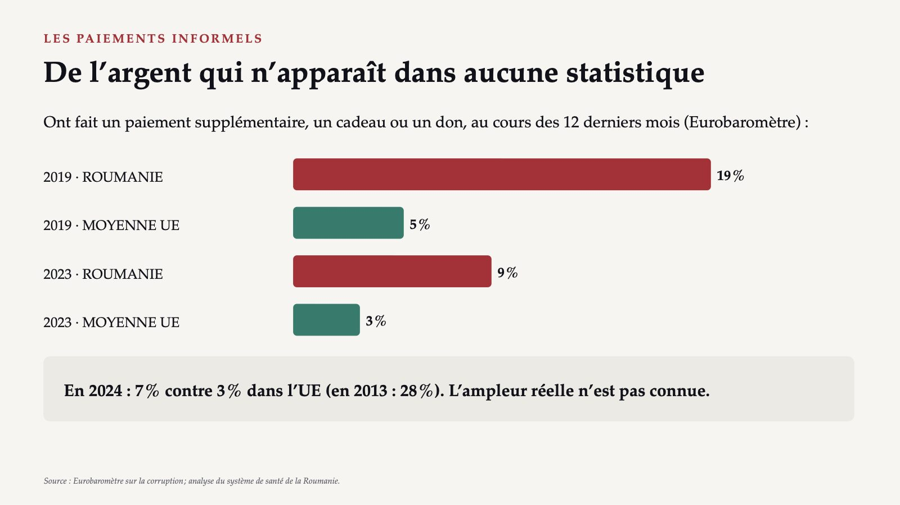
12 / 54La réponse apparaît après la séance
La réponse apparaît après la séance
Le dossier médical, à la sortie
![DEUXIÈME ACTE · LA COMPLICATION Le dossier médical, à la sortie PENDANT LE SÉJOUR antibiotique intraveineux ; insuline ajustée selon les glycémies ; dose de diurétique modifiée, poids surveillé chaque jour CE QU’INSCRIT LE RÉSIDENT un seul diagnostic : pneumonie, sans précision (J18.9) CE QUI MANQUE le diabète (E11.9) et l’insuffisance cardiaque (I50.9), écrits dans l’évolution, non dans la rubrique des diagnostics secondaires LE STATISTICIEN « Ça donne un petit groupe. » UN COLLÈGUE « Mets aussi une complication sévère, pour que ça rapporte plus. » Rien dans le dossier ne la justifie. Cas construit pour le cours ; les détails sont plausibles, non réels.](diapozitive/C08/014.jpg) 14 / 54
14 / 54Qu’inscrit le médecin dans le dossier médical avant de le clôturer ?
![MENTIMETER · VOTE 2 DEUXIÈME DÉCISION Qu’inscrit le médecin dans le dossier médical avant de le clôturer ? A Seulement la pneumonie, parce qu’elle a été le motif de l’hospitalisation B La pneumonie comme diagnostic principal, plus le diabète et l’insuffisance cardiaque, traités et surveillés pendant le séjour C La pneumonie, le diabète, l’insuffisance cardiaque et une complication sévère, pour que le groupe vaille plus D Rien de plus : c’est le statisticien qui fait le codage Vote individuel, sans discussion. Répondez sur votre téléphone, au code affiché.](diapozitive/C08/015.jpg) 15 / 54
15 / 54Deux voisins, deux minutes
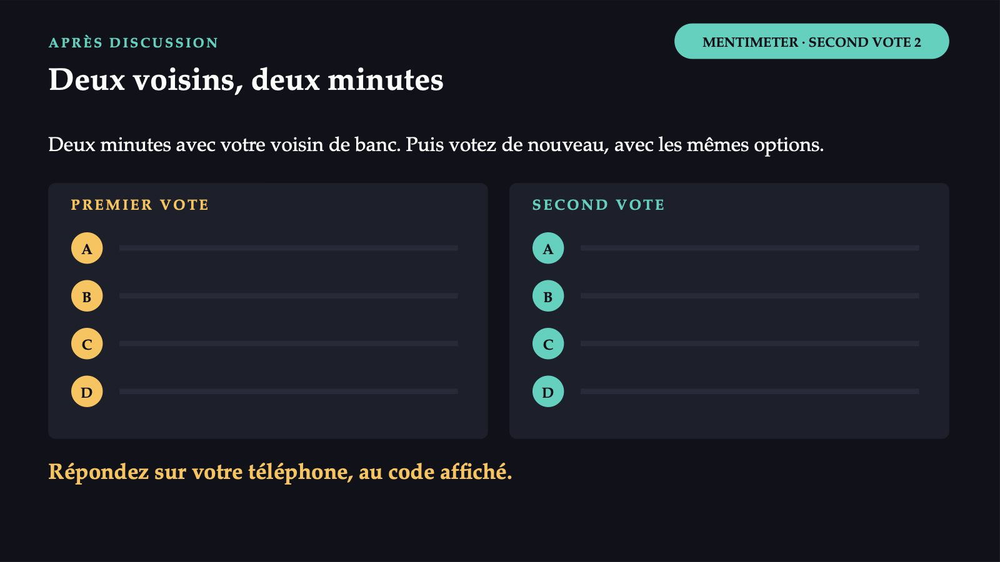
16 / 54Comment l’argent mis en commun arrive aux prestataires
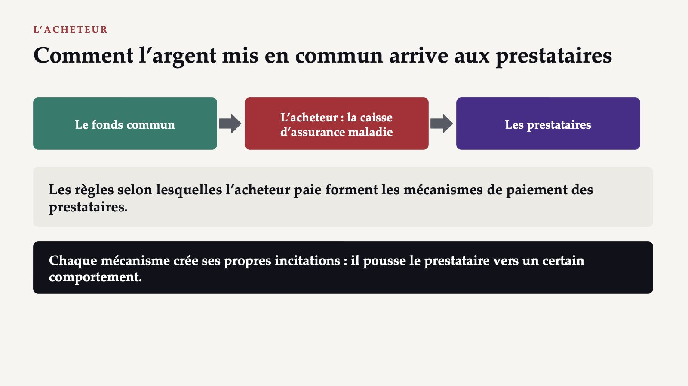
17 / 54Ce qui est payé et vers quoi cela pousse
![LES MÉCANISMES DE PAIEMENT (1) Ce qui est payé et vers quoi cela pousse LE MÉCANISME CE QUI EST PAYÉ VERS QUOI CELA POUSSE Le budget par postes somme fixe par poste de dépenses trop peu de services ; aucune attention aux résultats Le budget global somme fixe pour une période, sans postes trop peu de services, place pour l’efficience La capitation somme fixe par personne inscrite trop peu de services ; trop d’orientations Le paiement à l’acte chaque service, à tarif fixe trop de services Source : OMS, synthèse sur l’achat stratégique des services, 2019, annexe 1.](diapozitive/C08/018.jpg) 18 / 54
18 / 54La performance, le cas et la journée d’hospitalisation
![LES MÉCANISMES DE PAIEMENT (2) La performance, le cas et la journée d’hospitalisation LE MÉCANISME CE QUI EST PAYÉ VERS QUOI CELA POUSSE Le paiement à la performance l’atteinte d’une cible fixée d’avance attention à ce qui est payé, parfois au détriment du reste Le paiement par cas (DRG) somme fixe par séjour, selon les caractéristiques cliniques plus d’hospitalisations, coût plus bas par cas, évitement des cas lourds Le paiement à la journée somme fixe par journée d’hospitalisation séjours prolongés, sélection des patients Source : OMS, synthèse sur l’achat stratégique des services, 2019, annexe 1.](diapozitive/C08/019.jpg) 19 / 54
19 / 54Aucun mécanisme n’est bon seul
![LE SALAIRE ET LES COMBINAISONS Aucun mécanisme n’est bon seul LE SALAIRE médecins des hôpitaux, des ambulatoires publics et de la santé publique ; ne lie le revenu ni au volume ni à la qualité 2018 les salaires des médecins et des infirmières ont augmenté de 70 % à 172 %, primes comprises LES COMBINAISONS l’acte sans plafond mène à trop de services ; la capitation protège le budget ; la performance ne corrige que ce qu’elle mesure Source : analyse du système de santé de la Roumanie (OMS Europe et Observatoire européen).](diapozitive/C08/020.jpg) 20 / 54
20 / 54Par habitant, à l’acte et à la performance
 21 / 54
21 / 54Les caisses contractent avec tous les prestataires éligibles
![ROUMANIE · L’AMBULATOIRE ET L’HÔPITAL Les caisses contractent avec tous les prestataires éligibles L’AMBULATOIRE à l’acte, en points ou en lei ; en moyenne 28 services par jour, 15 minutes par consultation L’HÔPITAL DRG pour les aigus ; paiement à la journée pour les chroniques ; par cas pour l’hôpital de jour ; programmes nationaux LES CAISSES ne choisissent pas leurs prestataires ; tarifs fixes, volume négocié dans la limite du budget Source : analyse du système de santé de la Roumanie (OMS Europe et Observatoire européen).](diapozitive/C08/022.jpg) 22 / 54
22 / 54Groupes de diagnostics : cliniquement proches, coût proche
![QU’EST-CE QUE LE SYSTÈME DRG Groupes de diagnostics : cliniquement proches, coût proche Les patients sortis sont classés en groupes cliniquement semblables, qui consomment des ressources semblables. L’ORIGINE années 70, Université Yale : médecins, statisticiens et économistes voulant évaluer les hôpitaux LE SECOND CRITÈRE la classification des maladies ordonne les diagnostics ; les DRG ajoutent le coût des soins DEUX SORTES groupes médicaux et groupes chirurgicaux, selon l’intervention chirurgicale](diapozitive/C08/023.jpg) 23 / 54
23 / 54Sept variables obligatoires
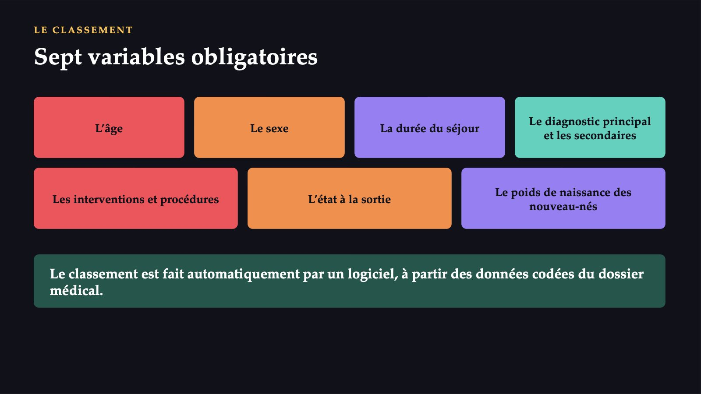
24 / 54Le chemin des DRG jusqu’en Roumanie
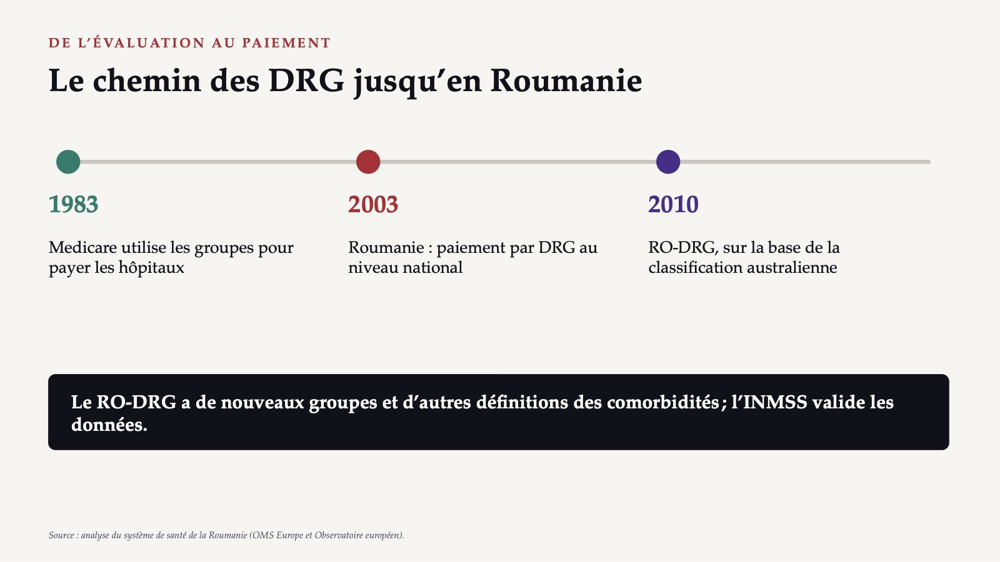
25 / 54Quatre étapes
![DU DOSSIER MÉDICAL AU PAIEMENT Quatre étapes 1 · LE CODAGE le médecin choisit le diagnostic principal et les secondaires ; chacun reçoit un code 2 · LE CLASSEMENT le logiciel place le cas dans un groupe, d’après les variables codées 3 · LE POIDS RELATIF chaque groupe a un poids fixé par les normes 4 · LE PAIEMENT remboursement mensuel, selon le poids relatif et le tarif, dans la limite de la somme contractée Principal : l’affection qui a d’abord motivé le traitement. Secondaires : celles qui coexistent et influencent les soins. Source : modalités d’application du contrat-cadre, arrêté commun MS–CNAS de 2023.](diapozitive/C08/026.jpg) 26 / 54
26 / 54Paiement du cas = poids relatif × tarif par cas pondéré
![LA FORMULE Paiement du cas = poids relatif × tarif par cas pondéré TARIF PAR CAS PONDÉRÉ (TCP) fixé pour chaque hôpital, inchangé pendant la durée du contrat L’INDICE DE CASE-MIX (ICM) la complexité moyenne des cas de l’hôpital, fixée pour l’année en cours LA SOMME CONTRACTÉE les cas que les lits peuvent traiter × ICM × TCP ; le paiement se fait dans cette limite La formule est une simplification. Un coût au-dessus du tarif est une perte ; en dessous, un gain. Source : modalités d’application du contrat-cadre, arrêté commun MS–CNAS de 2023.](diapozitive/C08/027.jpg) 27 / 54
27 / 54Le même cas, trois façons de le coder
 28 / 54
28 / 54Moins de diagnostics que les soins réalisés
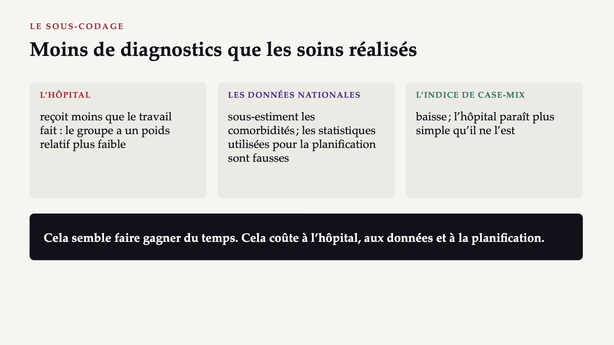
29 / 54Plus grave sur le papier que dans le dossier médical
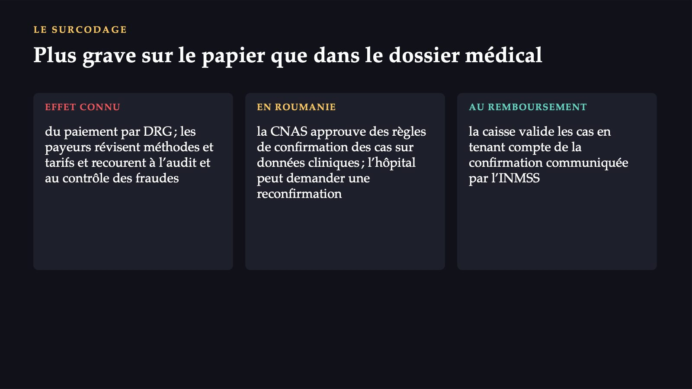
30 / 54Rien de ce qui n’est pas documenté ne se code
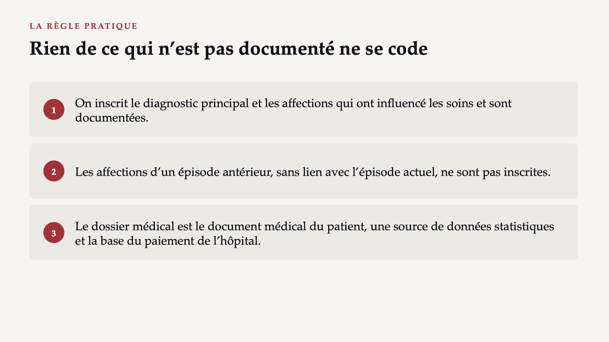
31 / 54La réponse apparaît après la séance
La réponse apparaît après la séance
Les avantages et les limites
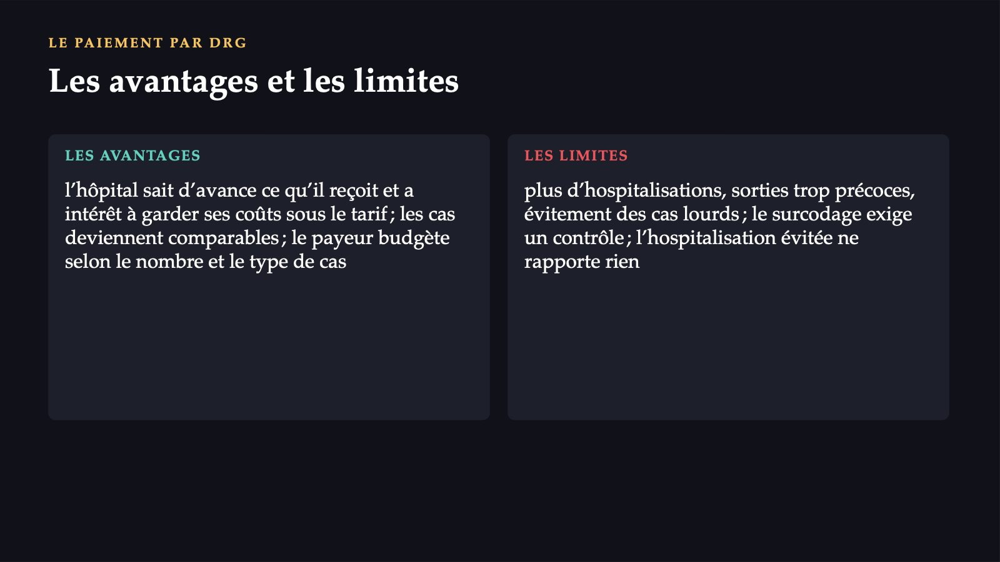
33 / 54100
![MENTIMETER · 100 POINTS L’OUTIL DE LA SÉANCE Le fonds supplémentaire de la Caisse B 10 millions de lei ; un point = 100 000 lei. Les patients comme Mme M. arrivent aux urgences le soir et le week-end. Répartissez 100 points : LES SOINS PRIMAIRES consultation de suivi : 60 lei L’AMBULATOIRE consultation de spécialité : 120 lei LES HÔPITAUX cas aigu comme celui de Mme M. (option B) : 3 300 lei LA PRÉVENTION évaluation du risque : 40 lei 100 Valeurs construites pour le cours. Répondez sur votre téléphone, au code affiché.](diapozitive/C08/034.jpg) 34 / 54
34 / 54Trois profils d’allocation
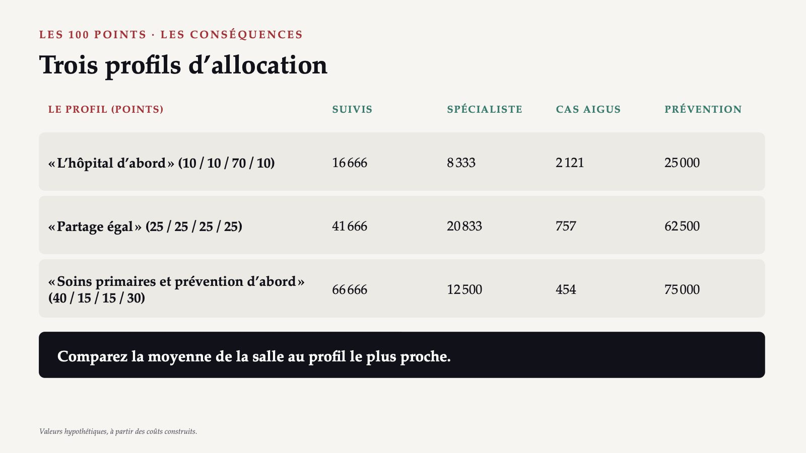
35 / 54L’argent mis dans l’hôpital paie la conséquence, non la cause
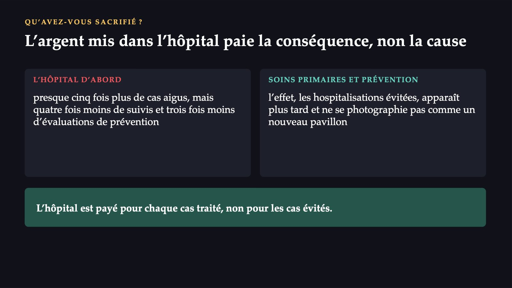
36 / 54Pourquoi Mme M. est-elle arrivée aux urgences ?
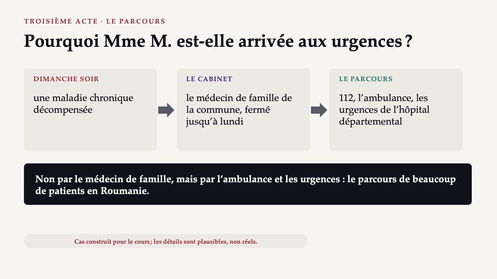
37 / 54La plupart des problèmes se règlent en bas
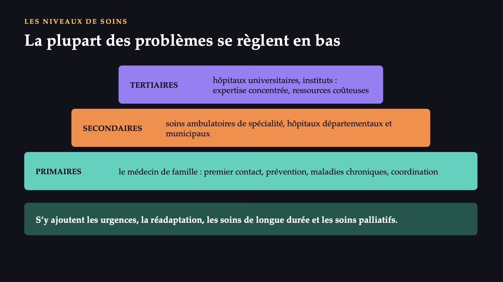
38 / 54Classés selon la compétence et selon la propriété
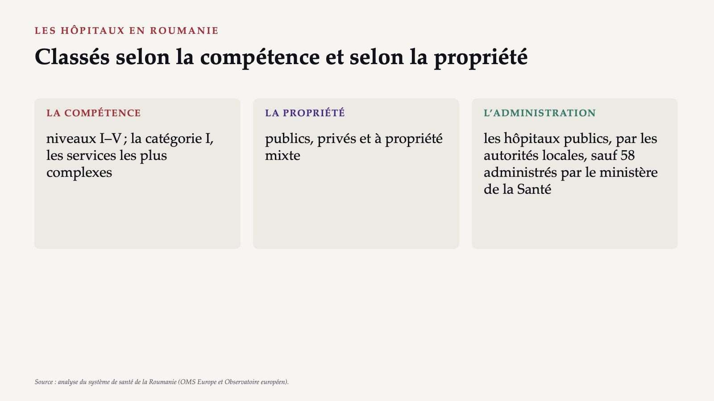
39 / 54La règle : l’orientation vers le spécialiste
 40 / 54
40 / 54Pourquoi il fonctionne mal
 41 / 54
41 / 54Plus d’hôpitaux, surtout privés
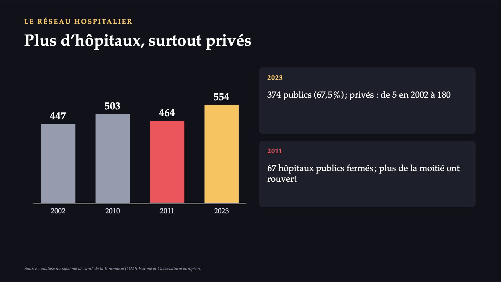
42 / 54L’une des plus grandes capacités de l’UE
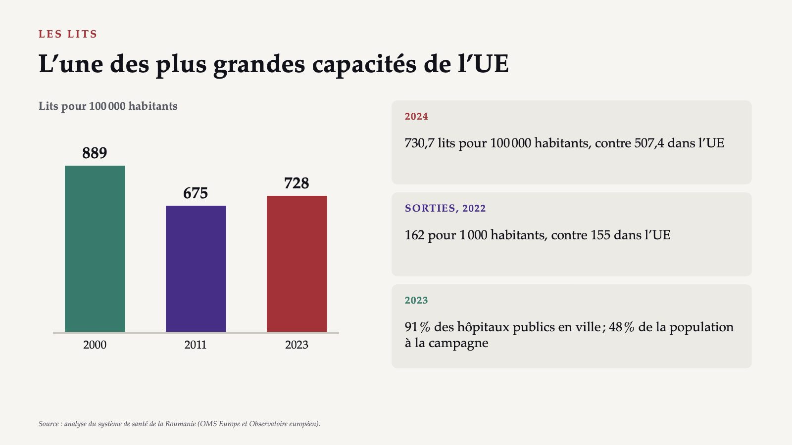
43 / 54Où vont les dépenses de santé
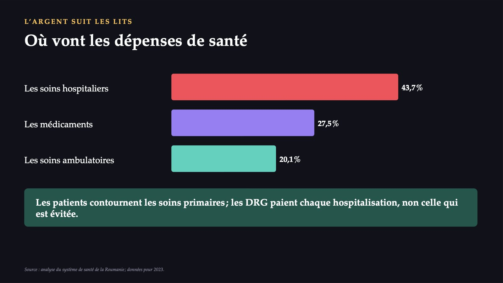
44 / 54Les hôpitaux régionaux : proposés, reportés, en construction
![LA RÉGIONALISATION Les hôpitaux régionaux : proposés, reportés, en construction 2003 les rapports demandent des réseaux régionaux 2004 une loi non adoptée : huit hôpitaux régionaux 2011 la stratégie de rationalisation 2016 les premiers plans régionaux 2019 début de la construction de trois : Iași, Cluj, Craiova Un hôpital régional ne règle pas seul le problème de Mme M. : il lui faut des soins primaires forts. Source : analyse du système de santé de la Roumanie (OMS Europe et Observatoire européen).](diapozitive/C08/045.jpg) 45 / 54
45 / 54La réponse apparaît après la séance
La réponse apparaît après la séance
La réponse apparaît après la séance
La réponse apparaît après la séance
Quel changement du paiement aiderait ?
![MENTIMETER · VOTE 3 TROISIÈME DÉCISION · LE TRANSFERT Quel changement du paiement aiderait ? Caisse du département B : les insuffisants cardiaques des communes sans horaires prolongés sont souvent réhospitalisés après la sortie. A Un poids relatif plus élevé pour les groupes d’insuffisance cardiaque B Un paiement à l’acte pour le suivi après la sortie chez le médecin de famille, avec un indicateur de performance C Les médecins de famille payés intégralement par capitation D Les hôpitaux payés à la journée d’hospitalisation Un seul vote, sans second vote. Répondez sur votre téléphone, au code affiché.](diapozitive/C08/048.jpg) 48 / 54
48 / 54La réponse apparaît après la séance
La réponse apparaît après la séance
Dix questions, dans l’ordre du cours
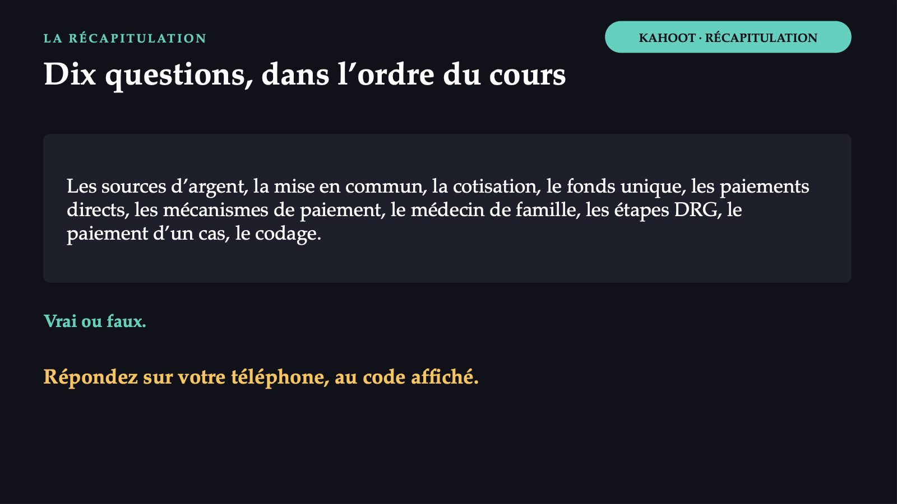
50 / 54La réponse apparaît après la séance
La réponse apparaît après la séance
L’argent d’une seule hospitalisation
![CE QUI RESTE L’argent d’une seule hospitalisation 1 L’hospitalisation d’un assuré est payée, pour l’essentiel, par le fonds national unique, par la caisse départementale. 2 Le fonds est alimenté par la cotisation de 10 %, des subventions et d’autres recettes, mises en commun au niveau national. 3 L’acte pousse vers plus de services, la capitation vers moins, le paiement par cas vers des séjours plus nombreux et moins chers. 4 Les diagnostics secondaires documentés peuvent changer le groupe DRG et le paiement. Le dossier correct paie correctement l’hôpital ; l’organisation des services décide si Mme M. revient.](diapozitive/C08/052.jpg) 52 / 54
52 / 54Ce que vous faites autrement dans le service
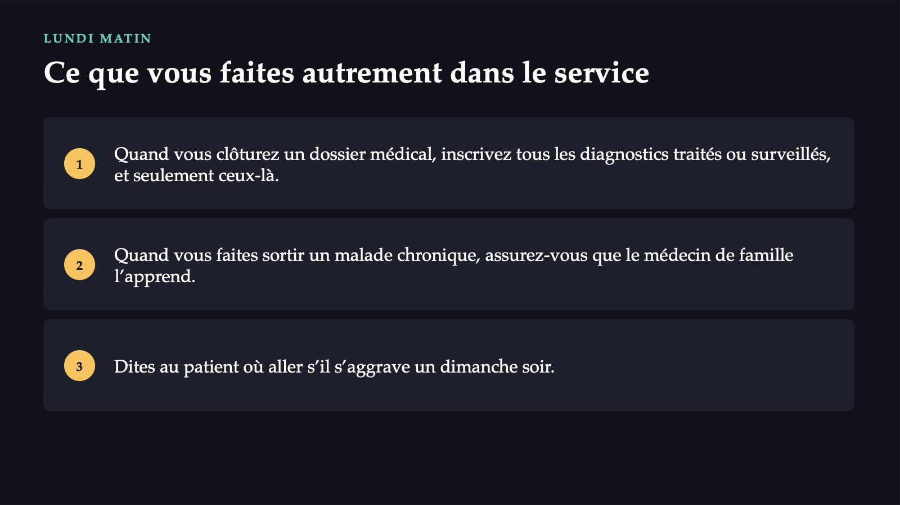
53 / 54Avant de partir
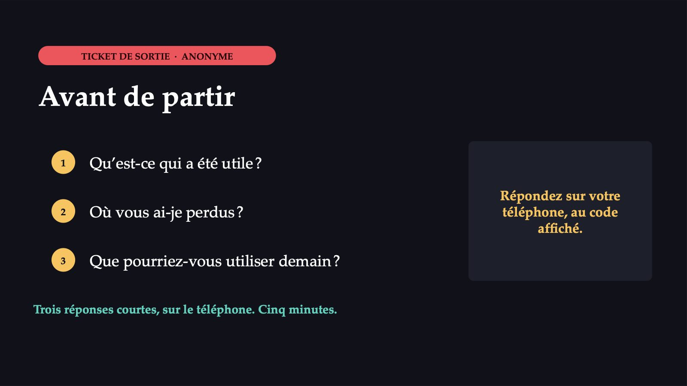
54 / 54Flèches ou espace : navigation · O : vue d’ensemble · N : notes de l’intervenant · F : plein écran · Échap : fermer